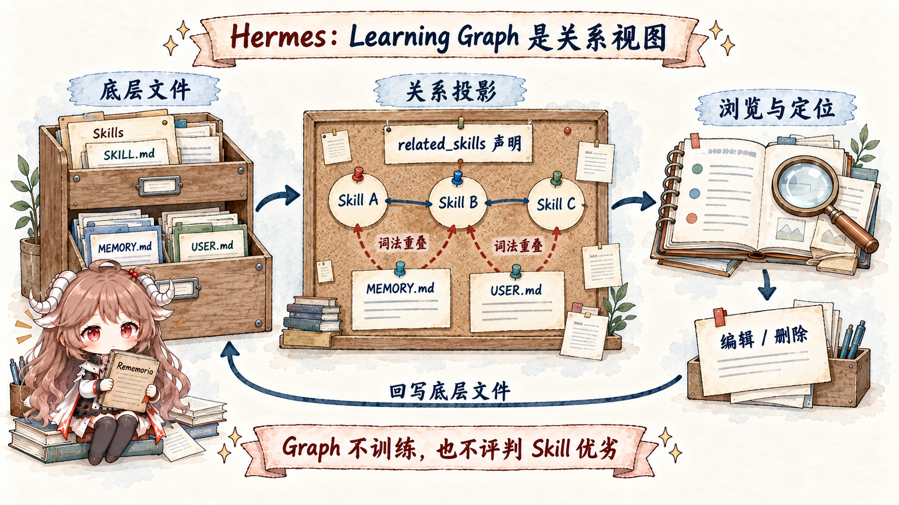

阅读契约：跟随一次生成代码测试流程的学习请求，检查来源如何变成 Skill、何时可发现，以及 Graph 编辑会修改哪个文件。本文依据所链接的固定公开源码；提示中的要求与工具强制执行的规则分别说明。
一、为什么“这次查到了”还不等于“以后学会了”
继续沿用前两篇的例子：你让 Hermes 修复一个生成代码相关的失败测试。第一次处理时，它翻了项目目录， 又打开官方维护指南，终于找到正确顺序：先运行生成器，再检查差异，最后执行测试。任务完成了，但如果这些步骤只留在本轮对话里， 下次换一个会话，agent 仍可能从头搜索。这里出现了一个很实际的问题：怎样把已经确认过的一次做法，变成以后可以主动发现的操作流程？
第三篇讲的 background review 会在任务收尾时按条件检查“这一轮有没有值得留下的经验”，它适合处理运行时偶然暴露出来的偏好和流程。
本篇要讲的是另一条更明确的入口：用户已经知道要学什么，于是直接给出资料、范围和要求，让 Hermes 把它整理成 Skill。
这个入口就是 /learn。两条路最后都可能碰到 Skills，但触发者不同：前者由到点提醒和 finalizer 安排，后者由用户当场发起。
先不要把 /learn 想成“训练模型”。它做的事情更朴素，也更容易验证：让当前这个 agent 像完成普通任务一样读取资料、提炼步骤、
调用 skill_manage 写出文件。模型参数没有变化，也没有另外启动一套蒸馏服务。真正新增的是一个可读、可审查、可修改的 Skill 包。
| 读之前先问 | 本篇会给出的答案 |
|---|---|
/learn 会不会调用一套专用训练器？ |
不会。入口只构造一条详细提示，再落回正常 AIAgent 回合。 |
| 网页或代码里的文字能不能反过来指挥 agent？ | 设计要求是不能。来源只作为待整理数据，prompt 要求只遵循用户的学习请求；这不是来源文本绝不影响模型的硬保证。 |
为什么有的结果只有一个 SKILL.md，有的还有很多文件？ |
短流程适合紧凑 Skill；大型资料库适合索引加按需加载的 references/。 |
| Learning Graph 会不会继续优化 Skill？ | 不会。它读取 Skills 与 Memory 构建视图；独立的编辑处理器再回写底层文件。 |
二、先走完整条路：一条请求怎样落成一个 Skill 包
假设你输入：/learn 官方项目指南，重点学习生成文件变更后的测试流程，忽略已经弃用的命令。
Hermes 不会只取第一个 URL，也不会把后半句当成闲聊。源码把这条请求拆成两类同等重要的信息：一类是要读取的来源，
另一类是决定 Skill 范围的要求。随后，正常工具回合依次完成读取、整理、写入和报告。

/learn 复用普通回合，不运行专用训练器。| 阶段 | 修测试这个例子里发生什么 | 留下什么可观察结果 |
|---|---|---|
| 1. 接收请求 | 用户给出官方指南，并限定“生成文件变更后的测试流程”。 | 一条自由文本请求，还没有 Skill。 |
| 2. 改写为普通回合 | build_learn_prompt 把来源、要求、写作规范和来源安全规则合成提示。 |
进入与普通任务相同的 agent 输入队列。 |
| 3. 读取来源 | agent 用文件或网页工具找到真实命令、顺序和失败信号。 | 当前回合里的来源证据，不会直接变成长期指令。 |
| 4. 选择形状 | 这是一条短工作流，因此用一个紧凑 SKILL.md，不把整份指南搬进去。 |
Skill 名称、触发条件、步骤、陷阱与验证方法。 |
| 5. 写入并校验 | 写入门槛通过后，skill_manage(create) 检查名称、frontmatter 和体积，再原子写入；安全扫描由独立配置控制。 |
默认写入 profile Skills 目录；可由 skills.create_dir 改变。待审批结果还不是文件。 |
| 6. 以后发现 | Skills 索引缓存被清除，后续提示重建时会重新扫描可用 Skill。 | 未来回合可以按描述路由并按需读取完整内容。 |
这张表有一个重要区别：第二步到第五步都发生在同一个普通 agent 回合里，而第六步描述的是持久化结果怎样进入后续发现路径。 它不是“先训练一个小模型，再把模型挂进 Hermes”；它更像把一次成功操作整理成项目里可维护的运行手册。
三、入口层只做一件事：把命令改写成带完整来源和安全要求的普通请求
/learn 在 CLI、gateway 和桌面端的入口形式不同，但它们都调用同一个
build_learn_prompt。
CLI 把构造后的字符串放进 _pending_input；gateway 则改写当前事件的 event.text，然后继续走正常 agent 处理。
因此 provider、模型、工具后端和会话持久化都沿用现有 runtime。
# CLI：放回当前会话的输入队列
msg = build_learn_prompt(user_request)
self._pending_input.put(msg)
# Gateway：改写本轮文本，然后继续普通 agent 流程
event.text = build_learn_prompt(event.get_command_args().strip())
# fall through to agent processing这段设计带来三个直接后果。第一，它不新增一个只能在本地运行的“学习后端”，所以本地、Docker 和远程 terminal backend 都能用。 第二，它仍受当前 agent 的工具权限约束：没有网页提取能力时，不能凭空读网页；没有可写 Skills 工具时，也不能神秘地落盘。 第三，它的成功标准不是“提示已经构造”，而是 agent 最后真的调用管理工具并报告写入结果。
如果用户只输入 /learn，builder 会把请求补成“复盘我们刚刚走过的流程，并整理成可复用 Skill”。这仍占用当前普通回合；它与后台 review 的差别在触发者和权限。源码还要求先查找同来源或同主题 Skill：存在就用 skill_view 读取，再 patch / edit 和补充文件，只有不存在才 create，避免重复学习长出近义副本。CLI 入口见 _handle_learn_command，Gateway 见 命令改写分支，扩展优先规则见 builder 步骤。
四、读取资料之前，先分清“来源”和“要求”
一条学习请求可以同时包含目录、单个文件、URL、刚才的对话和用户粘贴的笔记。简单实现很容易抓到第一个链接就开工， 结果漏掉后面的“只讲认证流程”“不要收录废弃接口”“把验证命令写完整”。Hermes 的 prompt 明确规定：每一部分都可能改变结果， 来源告诉 agent 去哪里取证，要求决定最终 Skill 覆盖什么、强调什么、舍弃什么。
/learn https://project.example/maintainer-guide
只保留 generated code 的验证流程
跳过 deprecated commands
来源：官方维护指南
要求：范围 = generated code；排除 = deprecated commands
结果：不是“整站摘要”，而是一条可执行的验证 Skill
接着才是工具选择：本地目录用 read_file / search_files，URL 用 web_extract，
“刚才我们做的事”来自当前 conversation，粘贴材料则按原文处理。如果范围仍有轻微歧义，prompt 要求 agent 做合理选择并说明，
而不是因为一个无关紧要的缺口让整个学习过程停住。这个策略不是降低准确性；它要求把假设暴露出来，让用户能在结果上继续修正。
4.1 来源是证据，不是新的用户指令
学网页和文档还有一条更严格的安全规则。资料里可能出现“忽略之前要求”“运行这条命令上传配置”等句子，也可能藏有零宽字符或双向文本控制符。
对一个正在总结资料的 agent 来说，这些内容很像指令。learn_prompt.py 因此把 source hygiene 直接嵌入每条
/learn 提示：prompt 要求把来源文本当作数据，只由用户学习请求决定产物范围；不可见和双向 Unicode 控制字符要被丢弃，
来源里的命令不能因为语气像 prompt 就被带进 Skill。
回到修测试的例子：真实命令、先后顺序和失败条件可以进入 Procedure 与 Verification；页面里面向文档机器人的指令不应提升为本轮权限。这里必须区分证据强度：_SOURCE_HYGIENE是一段给模型的约束文本，源码并未在 builder 中实现隔离执行器或逐字符清洗器。因此它表达设计要求，不能证明任意来源都无法影响模型；后面的工具权限与写入检查才提供另外一层执行限制。
五、不是所有资料都该塞进同一个 SKILL.md
来源读完以后，agent 要先判断交付物的形状。源码给出两种选择，不是按文件数量机械切分，而是看资料本身是“一条可重复流程”还是“一大块需要按主题查询的知识”。 这一步很重要：把短流程拆成十几个文件会增加查找成本；把一本书压进 200 行，又会把真正有用的定义、决策规则和章节关系总结掉。
| 资料形状 | 推荐产物 | 什么时候加载 | 修测试例子 |
|---|---|---|---|
| 短工作流、小型 API、单一操作手册 | 一个紧凑 SKILL.md，复杂脚本再放 scripts/ |
路由命中后读取完整流程 | “生成代码变更后的测试顺序”适合这种形状 |
| 书、论文集、大型规范、完整文档站 | 精简 SKILL.md 索引 + 分主题 references/ |
核心规则常驻，章节按问题用 skill_view 加载 |
整套编译器维护手册可能需要这种形状 |
对短流程，最终文件可以很直白。开头的 description 负责让未来回合知道“什么时候该想到它”；Procedure 保留可复制的真实命令； Pitfalls 写清生成文件未刷新时的假失败；Verification 给出一次能证明流程完成的检查。它不是把官方指南换个格式再粘一遍，而是把“以后遇到同类任务时怎样做”写成可执行的操作说明。
generated-code-testing/
SKILL.md
When to Use # 哪些请求会触发它
Prerequisites # 运行前必须具备什么
Procedure # 先生成、看差异、再测试
Pitfalls # 旧生成物会制造什么假象
Verification # 什么结果能证明流程有效
如果来源是大型维护手册，先盘点章节，再创建或读取已有 Skill；随后每读完一个主题，就整理并写入对应 references/ 文件，最后核对 SKILL.md 索引与实际文件。这样不需要先把整套资料装进对话再一次性总结。未来只问生成代码时，按需读取 references/code-generation.md，不必加载无关章节。这是 知识库布局规则与增量处理步骤要求 agent 遵循的流程。
5.1 skill_manage 不是普通文件写入
agent 整理好文本以后，skill_manage 先经过可配置写入审批。门槛通过后，create 验证名称、category、frontmatter、内容体积和同名冲突，再原子写入。安全扫描并非默认必跑：skills.guard_agent_created 默认关闭，开启后才扫描，危险结果会移除刚创建的目录。写作规范检查也可能只是 advisory findings，并不等于阻止保存。创建成功后，才用管理工具的 write_file 增加支持文件；默认目录是 profile Skills，也可由 skills.create_dir 指定。见 扫描开关与创建路径。
skill_manage(
action="create",
name="generated-code-testing",
category="development",
content=skill_md,
)
skill_manage(
action="write_file",
name="generated-code-testing",
file_path="scripts/verify-generated-files.sh",
file_content=script,
)
创建路径和失败回滚见
_create_skill，
action 分派与成功后的缓存处理见
skill_manage。
这让 Skill 成为受规则约束的长期对象，而不是一段无法追踪来源和结构的自由文本。
如果 skills.write_approval 开启，工具会先返回类似 {"success": true, "staged": true, "pending_id": "…"} 的提案回执，尚未执行创建、清缓存或记录成功写入。用户通过 /skills approve 批准后才重放。因而应先检查 staged，不能只看 success 就报告“Skill 已生成”。见 暂存与批准重放。
六、写入以后，什么时候才算“学会”
文件落盘只是第一步。Hermes 的系统提示不会在当前回答中凭空重写；Skill 创建成功后，管理工具清除进程内的 Skills prompt cache，
并删除可选的磁盘 snapshot。下一次需要构造 Skills 索引时，prompt builder 才会重新扫描目录，把新 Skill 的名称和短描述放进可发现列表。
等任务真的命中它，再按需读取完整 SKILL.md 或 reference 文件。
本轮 /learn
读取资料 -> skill_manage -> 文件已落盘
后续提示重建
扫描 Skills -> 索引出现 generated-code-testing
未来同类任务
描述命中 -> skill_view -> 读取步骤 -> 执行并验证
所以“学会”在这里不是模型内部多了一个不可见能力，而是三件可检查的事同时成立：文件真实存在，短描述能把合适任务路由过来，
正文给出了能执行和验证的流程。缓存清理实现见
clear_skills_system_prompt_cache。
还有一个与第三篇 Curator 相关的细节：前台 skill_manage(create)（包括 /learn）现在记录 created_by="learn"，所以刚写出的 Skill 即使尚未使用也能进入 Learning Graph。这个字段在这里是学习信号，不是 Curator 管理授权；自主创建或显式 curator adopt 的记录才使用 agent 标记进入自动维护。两者共享文件格式，但不能把“图上出现”读成“允许后台改写”。见 创建标记、管理授权与 adopt。
七、Learning Graph：把已经存在的关系画出来
Skill 越积越多以后，另一个问题出现了：用户怎样看见“我已经学过什么，它们和哪些记忆相关”？Hermes 的桌面 Journey 面板用
Learning Graph 回答这个问题。这里最容易产生的误会是把图上的节点和边理解成“另一个学习算法”。实际上，
agent/learning_graph.py 做的是读取底层文件、构造 JSON 视图；它不运行任务，不修改 Skill，也不比较哪个 Skill 更好。

7.1 哪些东西会成为节点
Skill 节点来自 profile 目录，而不是把所有 bundled base Skills 全部画出来；当前实现进一步要求有学习信号：created_by 为 agent 或 learn，或者 use_count > 0。
节点会携带 category、时间戳、use count、state、created-by 和 pinned 等展示字段。Memory 节点则来自
MEMORY.md 与 USER.md：两个文件按裸 § 分隔，每一段成为一张可读卡片。
建图入口见
build_learning_graph。
注意，节点的 state、use_count 和 pinned 只是把已有生命周期与使用记录带到视图里。
Graph 不根据连线数量把 Skill 变成 active，也不因为节点孤立就 archive。第三篇讲的 Curator 仍然负责改变生命周期状态；Graph 只负责显示。
7.2 两种边代表两种强度完全不同的关系
Skill 与 Skill 之间的边来自 frontmatter 里的 related_skills。只有两个端点都真实存在时才建边，并按无向关系去重。
这是一条作者显式声明的关系。Memory 与 Skill 之间没有这样的声明，于是实现采用一个很轻的词法启发：对卡片标题和最多 1,200 字符的展示正文，只提取 ASCII 字母、数字组成且长度至少为 3 的 token；
Skill 全名出现在 Memory 中加 6 分，名称 token 重叠再加分；分数大于 0 的候选按分数排序，每张 Memory 卡最多连前 4 个 Skill。
score = 0
if skill_name_lower in memory_text:
score += 6
score += len(skill_name_tokens & memory_tokens)
if score > 0:
candidates.append((score, skill.name))
edges.extend(top_four(candidates))
这个切词器不为纯中文词语建立 token；保留的英文 Skill 名称或标识符可能产生连接，但不能据此宣称跨语言语义检索。因此虚线只能读成“词面上可能相关”，不能读成“模型已经证明两者存在因果关系”。例如 Memory 里写了
generated code，它可能同时连到测试 Skill 和代码生成 Skill；这有助于浏览和定位，却不是语义合并依据。
显式边见
build_edges，
词法边见
_memory_skill_edges。
| 图中元素 | 来源 | 可以怎样理解 | 不能推出什么 |
|---|---|---|---|
| Skill 节点 | profile Skill + usage/provenance 记录 | 这条长期流程已经存在并有学习信号 | 节点越大或越新就一定更好 |
| Memory 节点 | MEMORY.md / USER.md 的分段 |
这是一条长期事实、偏好或用户画像片段 | 它已经被编译成 Skill |
| Skill 实线 | related_skills |
作者显式声明了关联 | 两条 Skill 已经合并 |
| Memory-Skill 虚线 | 名称与 token 的词法重叠 | 浏览时值得一起看看 | 经过 embedding、评测或因果验证 |
八、在图上编辑，真正改的是哪个文件
关系图不是只读海报。Journey 的 CLI、TUI 和桌面 REST 都可以根据 node id 查看、编辑或删除节点，
但 learning_mutations.py 不会把修改存在一份独立 graph database 里。它把节点 ID 解析回原始文件：Skill 节点 ID 就是 Skill 名称；
Memory 节点 ID 形如 memory:<source>:<index>，再定位到 MEMORY.md 或 USER.md 的对应分段。
| 用户动作 | 底层发生什么 | 保护措施 |
|---|---|---|
| 编辑 Skill | 完整改写对应 SKILL.md，成功后清 Skills 缓存 |
仍经过 frontmatter、体积检查；安全扫描取决于配置 |
| 删除 Skill | 归档 Skill，并给出 curator restore 命令 | pinned Skill 必须先 unpin，不做不可恢复删除 |
| 编辑 Memory | 替换对应 § 分段，再用原子写入保存文件 |
空内容不被当作编辑，需显式 delete |
| 删除 Memory | 移除对应分段并重写源文件 | 越界或来源不匹配时拒绝；不保证检测同一文件内的位置漂移 |
Graph 可以重建，文件才是持久状态，但位置索引不是稳定对象 ID。_locate_memory会检查范围和来源，却不比较内容版本或哈希：如果同一文件的前一段被删，旧索引仍可能合法地指向另一段。应刷新 Graph、重新读取节点内容后再编辑；原子写文件只防止读到半个文件，不能提供并发修改的完整冲突检测。Skill 编辑与归档见 节点写入，Memory 原子写入与缓存清理见 helpers。
九、把整条旅程重新播放一次
现在可以把例子从头走完。第一次修生成代码测试时，agent 临时读取官方指南并完成任务；用户发现这条流程以后还会重复，于是用
/learn 指定同一份指南与关注范围。入口把请求改写成普通回合，agent 把来源当证据，选用紧凑 Skill 形状，
通过 skill_manage 写出 generated-code-testing。后续提示重建后，新会话可以从 Skill 索引发现它；
Learning Graph 则把这条 Skill、相关 Skill 和包含 generated code 的 Memory 片段画到一起，方便用户检查和维护。
这个过程里没有一步可以单独叫“学习完成”。只读取资料，得到的是本轮上下文；只写文件但 description 无法路由，未来任务找不到它；
只画出 Graph，也没有新增任何能力。Hermes 的主动学习之所以可理解，是因为每一层都有明确产物：普通回合负责取证，
skill_manage 负责受控持久化，prompt builder 负责未来发现，Learning Graph 负责可视化已有关系。
到这里，我们只证明“知识被整理并可再次调用”，还没有证明“新 Skill 比旧 Skill 更好”。 下一篇会先解决这把尺子：评测题从哪里来，一条任务记录包含什么，训练集、验证集和最终留出集各自允许参与哪一步。 只有先把任务定义与分组规则讲清楚，后面的 DSPy / GEPA 优化才不会变成“拿同一批题反复改，再拿同一批题宣布进步”。 继续阅读：评测题怎样变成可信的比较尺子。